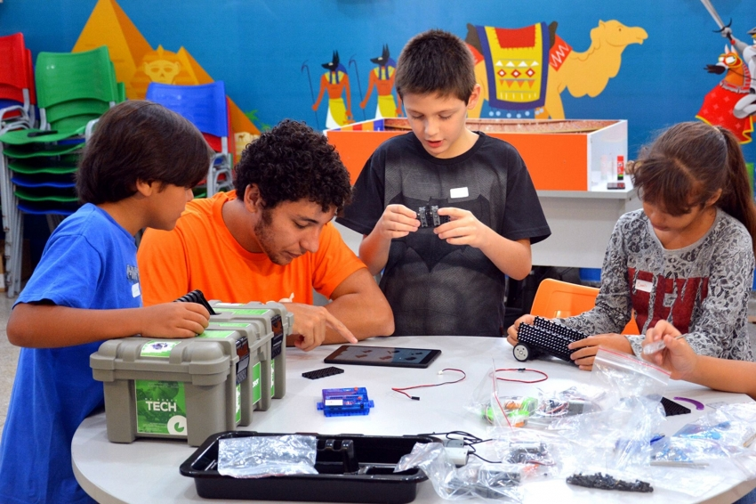
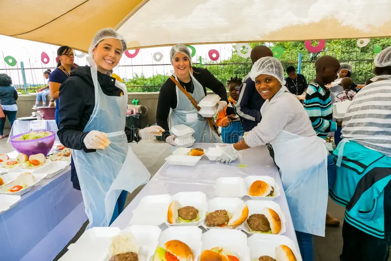

Projeto Educação para o Futuro
Oferecemos reforço escolar, oficinas de tecnologia e apoio pedagógico para crianças e jovens da rede pública.
Conheça as iniciativas que transformam a realidade da nossa comunidade diariamente. Veja como você pode fazer a diferença por meio do voluntariado ou de contribuições financeiras.
Oferecemos reforço escolar, oficinas de tecnologia e apoio pedagógico para crianças e jovens da rede pública.

Distribuímos semanalmente refeições nutritivas e cestas básicas para famílias em situação de vulnerabilidade social.

Sua dedicação e talento podem mudar vidas. Veja como se envolver:
Suas contribuições financeiras mantêm nossos projetos ativos e possibilitam sua expansão.
| Método | Chave / Dados bancários | Titular |
|---|---|---|
| Chave PIX (CNPJ) | 12.345.678/0001-99 | ONG Esperança Viva |
| Conta bancária | Banco Social | Agência: 0001 | C/C: 12345-6 | ONG Esperança Viva |